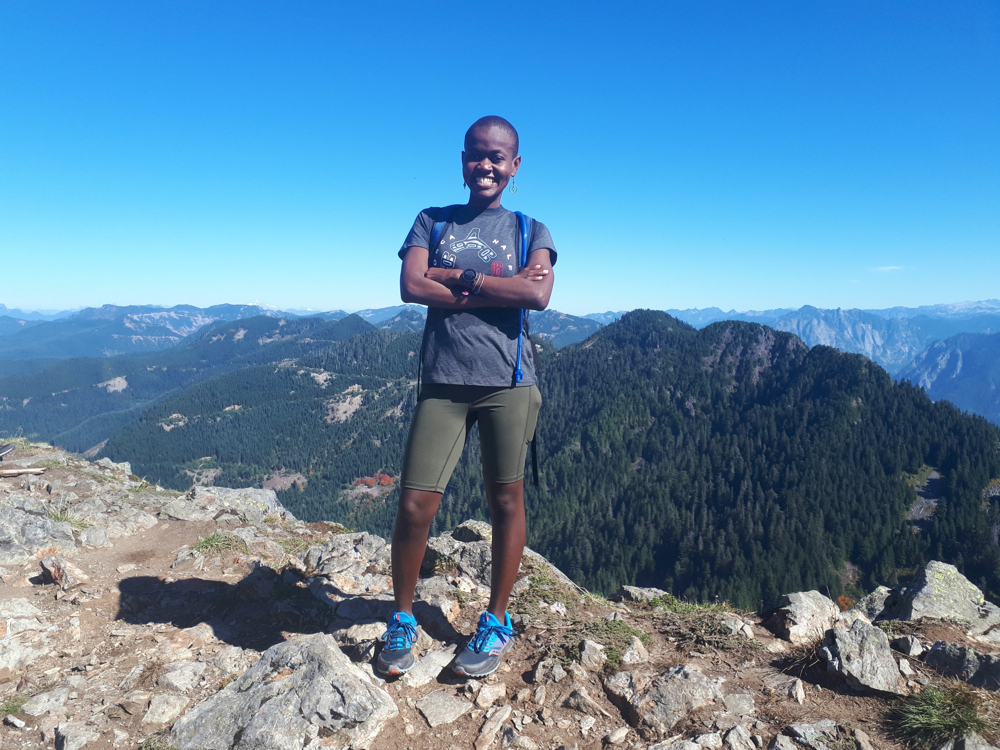

I entered 2021 with lists and plans but life had plans of its own. I lost a loved one and everything changed. I’m still processing grief but if there is anything it has taught me is how short life is, how fragile, how impermanent. So, instead of chasing meaningless listicles, I chose to live and do more of what makes me happy. I ended up missing a few boxes and that’s okay. As tradition goes, here is a summary of the year went.
Fitness ¶
-
I tried trail running and got hooked, you can read all about it here.

-
Not that I care but my Strava stats increased substantially from last year. Grateful for the opportunity and I hope to continue to play for as long as I can.

-
I also enjoyed a ton of races, which also appears something that makes me happy. More to that!

Writing ¶
- I completed a sizable technical writing project and I can’t wait to share it when its ready for public eyes.
- I semi-consistently blogged here, something I plan to continue to do whenever I have something to share.
- Super stocked about the writing projects I have lined up for next year.
Reading ¶
I once again surpassed my goal of reading 1 book a month.
Some of these books were educational, some were entertaining, some were validating but all of them were thoroughly enjoyed. What this collage doesn’t show are the ones I didn’t finish because they weren’t a good fit. Something I’m totally okay with. I’ll shoot for 20 books next year, more of a suggestion, the goal being to expand my horizons through books or otherwise.
Finance ¶
Finance doesn’t particularly excite me but I took the time to read Get Good With Money which turned to a great read. Next year I intend to continue to practice minimalism, responsible investing and keep it boring generally.
Miscellaneous ¶
I didn’t complete as many crafting projects as I wanted, neither did I play the piano as much but I do not regret the fun I had instead.

So, in case its not clear, I have no resolutions. The idea of writing things to accomplish like a robot doesn’t appeal to me anymore. Instead I have a few priorities and general direction I’ll be heading to, I’ll be heading towards adventures, growth and of course happiness. Happy New Years friends!